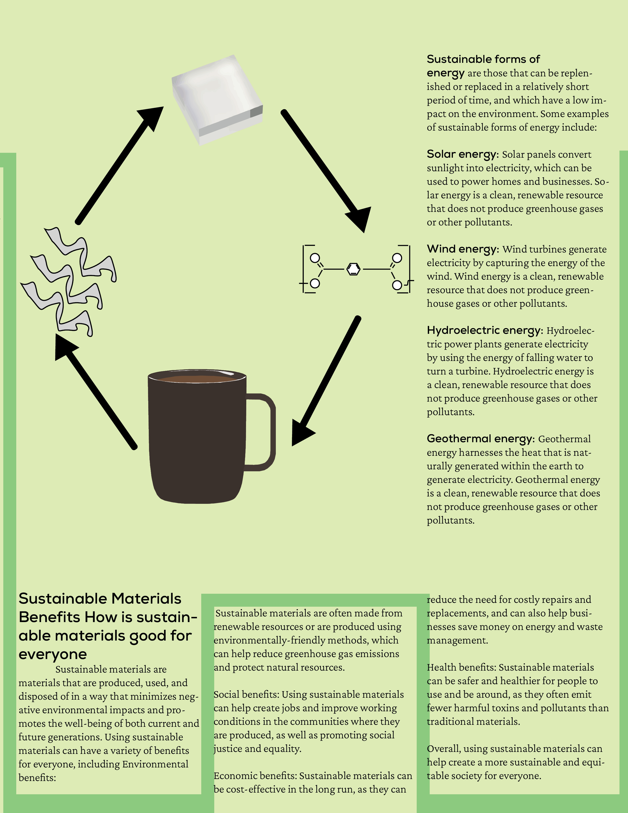

I was able to make and separate the logo move in a fascinating way by using anchor points, the mask, and the transform. The use of several points allowed the logo's components to be moved or transformed into different locations within the frame, and the mask allowed the logo to be divided into two halves rather than one.
As the world population continues to grow, so does the demand for goods and services. One sector that is at the forefront of meeting this demand is manufacturing.


Through the editorial montage that I have created, my aim is to showcase the potential of using waste as a resource for creating new materials.
